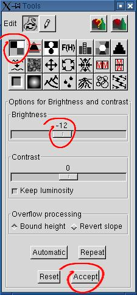

1. Creating the height field
A height field with a huge valley can be created in two ways: by
using the "height field pen" for digging the valley in a relatively
smooth height field, or by using the random generator until we get a
valley.
The height field at left was generated with
the random generator, clicking repeadly on the "Refresh" button
(actually 15 times). The distribution parameter was set to a high
value, to increase the probability of getting a large cleared area. See
the desert
tutorial for an explanation about the distribution parameter.
We set the camera parameters so that the valley becomes parallel to the
view axis. The little red arrow on the height field at right shows
approximately were is the camera.

Rendering the height field with sea_n_moon.pov shows that the
water is hidden under the terrain. We must decrease the height of the
valley bottom, or increase the height of the water plane in the Povray
file if we want to see the satellite reflected in the water.
|


|
2. Decreasing the height of the valley bottom
 We choose to work with the brightness /
contrast tool instead of decreasing the height of the water plane. A
-12 brightness correction decreases the height enough for our needs.
The rendered scene is better, but doesn't look eroded. You can stop
there if you're satisfied.
|
|
3. Preparing to erode the terrain with rain,
using "whimsical erosion"
A realistic eroded terrain shows "ribs". The rain erosion provided with
Geomorph gives a surface with delicate channels or gutters, which
doesn't show a "ribs" effect. We can approximate "ribs" before applying
the rain erosion, with the "whimsical erosion".
You can use the default settings.
 You should adjust the radius and the rib smoothing radius to your image
size. The defaults of 6 and 2 for a 512x512 image translate as
3 and 1 for a 256x256 image, 12 and 4 for a 1024x1024 image, and so on.
You should adjust the radius and the rib smoothing radius to your image
size. The defaults of 6 and 2 for a 512x512 image translate as
3 and 1 for a 256x256 image, 12 and 4 for a 1024x1024 image, and so on.
 This process has nothing to do with erosion, except some
likelihood. It was discovered more or less by chance or at random, when
experimenting with slope maps. The name is a translation of the French
word "fantaisiste", which means something like "funny" and "weird" (as
"whimsical" can mean, as I understand), but never "fanciful" or
"capricious" (as "whimsical"
does mean). But if you play with it a bit, maybe you'll find that it
fully
deserves the "whimsical" adjective... Nevertheless I would consider any
interesting suggestion about this name. This process has nothing to do with erosion, except some
likelihood. It was discovered more or less by chance or at random, when
experimenting with slope maps. The name is a translation of the French
word "fantaisiste", which means something like "funny" and "weird" (as
"whimsical" can mean, as I understand), but never "fanciful" or
"capricious" (as "whimsical"
does mean). But if you play with it a bit, maybe you'll find that it
fully
deserves the "whimsical" adjective... Nevertheless I would consider any
interesting suggestion about this name.
Hint: on the weird side, use a radius like 20 for a 512x512 image,
slide the "Mix" scale towards the "Result", then increase the contrast
with the brightness / contrast tool. If you find a use for the result,
drop me a mail!
|

|
4. Adjusting brightness and contrast
The contrast of the image is too weak, we don't even bother to render
it. The proposed settings for the brightness / contrast tool give a
valley ground which is black or almost black.
It's preferable that you click on the "Accept" button in all tools,
instead of relying on the auto-accept feature, at least as long
Geomorph is in an alpha or a beta phase. Inconsistencies were observed
when a new document is opened or created and the last transformation
was not committed.
The rendered image is not bad, but shows some strangeness. The "rain
erosion" would get rid of most weird "holes" or "loops".
|


|
5. Applying the rain erosion
The rain erosion is a simple but slow process. It drops randomly water
on the ground, and move soil down the slope until the slope is too low.
It doesn't add up drops to build creeks and rivers (not yet!).
Here 300000 drops were thrown on the ground. Maybe you'll be happy with
less (particularly if your computer is slow!). Hit the "Repeat" button
three times to get this result.
Remember that we started from an image of 512x512 pixels. For a 256x256
image, 75000 drops would give the same result. For a 1024x1024 image,
you'll have to use 4 x 300000 drops.
Hitting "Repeat" once is the same as hitting "Apply", but hitting
"Apply" repeatedly never gives more than 100000 drops, since it reuses
the original image as input.
The rendered image is more natural now. However, we could get a
smoother image with the "Crests" tool.
|


|
6. Using the "Crests" tool to smooth the
eroded terrain
The "Crests" tool implements a kind of "gravity erosion", or
micro-subsidence. Parts of the soil fell on parts of lower altitude.
Crests emerge where the slope is null and the height at its maximum.
Contrarily to the rain erosion, this transformation involves a soil
loss, so the average height of the terrain decreases a bit.
Set the steps at will, reset if you are not satisfied.
The 3 erosion tools and the order in which they were used here
(whimsical - rain - crests) are not compulsory. Variations on this
sequence can also
give interesting results.
Here is what we get with the steps parameter set at 6:
|

|
7. Using the Log transformation to create a
pond by raising the lower parts of the terrain
The proposed image, at the beginning of
this tutorial, shows a pond with a smooth shore. Raising slightly the
shore at the entrance of the cove obtained after step 6 would close the
cove. The log transformation allows this. It raises the lower parts of
the height field without raising the highest hills, while the deepest
parts remain black (think about the log curve to get the figure).
The parameter is interpreted as a percentage. Using 0,5, over a maximum
of 10, means that we merge 5% of the resulting log transformation with
95% of the original image. 0,5 or so is enough here, except if you want
another effect.
|

|